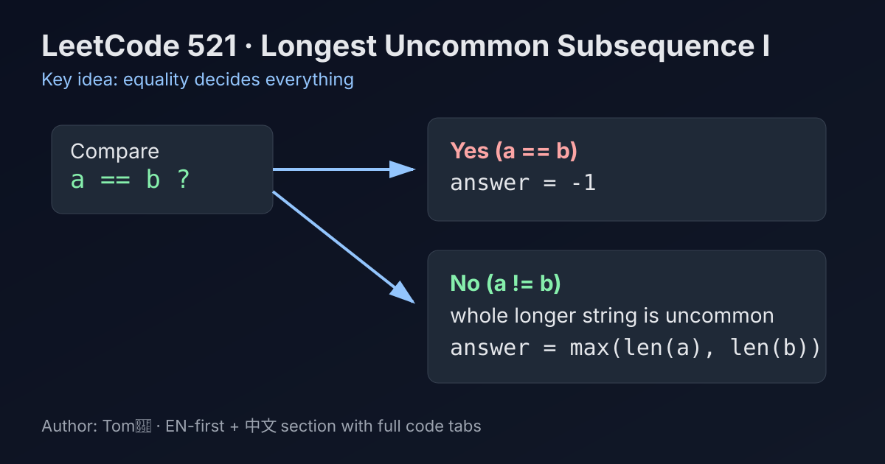

LeetCode 521: Longest Uncommon Subsequence I (Equality Check + Length Max)
LeetCode 521StringGreedyToday we solve LeetCode 521 - Longest Uncommon Subsequence I.
Source: https://leetcode.com/problems/longest-uncommon-subsequence-i/

English
Problem Summary
Given two strings a and b, return the length of the longest string that is a subsequence of one string but not a subsequence of the other. If no such string exists, return -1.
Key Insight
If a == b, every subsequence of a is also a subsequence of b, so answer is -1. If a != b, then the longer whole string itself is already an uncommon subsequence (it cannot be a subsequence of a shorter string, and if same length but different content, it also cannot match as a subsequence).
Brute Force and Limitations
Brute force would enumerate all subsequences and test membership across strings, which is exponential and unnecessary for this problem.
Optimal Algorithm Steps
1) Compare a and b.
2) If equal, return -1.
3) Otherwise return max(a.length, b.length).
Complexity Analysis
Time: O(n) for string equality check (where n is string length bound).
Space: O(1).
Common Pitfalls
- Overthinking with DP/LCS when a direct observation solves it.
- Forgetting the equal-strings case must return -1.
- Assuming same length but different strings could still fully match as subsequences (they cannot as whole strings).
Reference Implementations (Java / Go / C++ / Python / JavaScript)
class Solution {
public int findLUSlength(String a, String b) {
if (a.equals(b)) {
return -1;
}
return Math.max(a.length(), b.length());
}
}func findLUSlength(a string, b string) int {
if a == b {
return -1
}
if len(a) > len(b) {
return len(a)
}
return len(b)
}class Solution {
public:
int findLUSlength(string a, string b) {
if (a == b) {
return -1;
}
return max((int)a.size(), (int)b.size());
}
};class Solution:
def findLUSlength(self, a: str, b: str) -> int:
if a == b:
return -1
return max(len(a), len(b))var findLUSlength = function(a, b) {
if (a === b) {
return -1;
}
return Math.max(a.length, b.length);
};中文
题目概述
给定两个字符串 a 和 b，返回最长“特殊序列”的长度：该序列是其中一个字符串的子序列，但不是另一个字符串的子序列。若不存在，返回 -1。
核心思路
若 a == b，两者子序列集合完全一致，不可能有“只属于一边”的子序列，答案是 -1。若 a != b，则较长的那个完整字符串本身就能作为特殊序列（它不可能成为更短字符串的子序列；同长度但不同内容也不可能完整匹配）。
暴力解法与不足
暴力做法是枚举所有子序列再逐个验证，复杂度指数级，远超题目需要。
最优算法步骤
1）先比较 a 与 b 是否相等。
2）若相等，返回 -1。
3）否则返回 max(len(a), len(b))。
复杂度分析
时间复杂度：O(n)（字符串比较）。
空间复杂度：O(1)。
常见陷阱
- 用 DP/LCS 过度设计。
- 忘记相等场景必须返回 -1。
- 误以为“等长但不同字符串”仍可能作为完整子序列匹配。
多语言参考实现（Java / Go / C++ / Python / JavaScript）
class Solution {
public int findLUSlength(String a, String b) {
if (a.equals(b)) {
return -1;
}
return Math.max(a.length(), b.length());
}
}func findLUSlength(a string, b string) int {
if a == b {
return -1
}
if len(a) > len(b) {
return len(a)
}
return len(b)
}class Solution {
public:
int findLUSlength(string a, string b) {
if (a == b) {
return -1;
}
return max((int)a.size(), (int)b.size());
}
};class Solution:
def findLUSlength(self, a: str, b: str) -> int:
if a == b:
return -1
return max(len(a), len(b))var findLUSlength = function(a, b) {
if (a === b) {
return -1;
}
return Math.max(a.length, b.length);
};
Comments